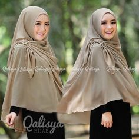
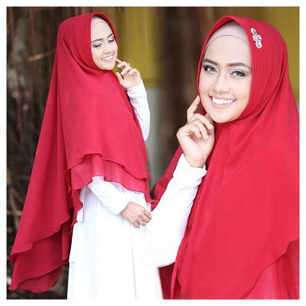
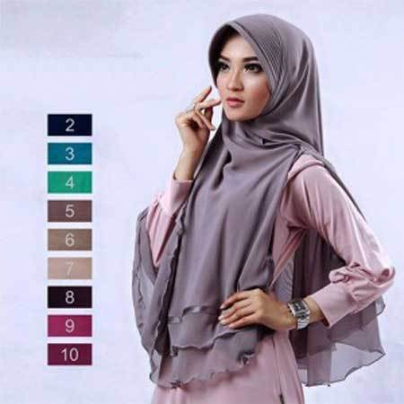
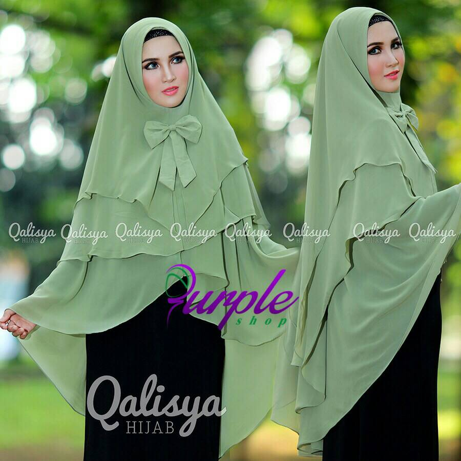
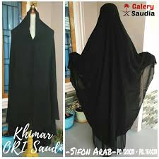

| Nama | Deskripsi | Harga | Gambar |
|---|---|---|---|
| Khimar Tebal Colat | Kain Wolfis A | Rp 85.000 |  |
| Khimar double slayer merah | Kain Betaloffi | Rp 65.000 |  |
| Khimar Double Layer Abu-abu | Kain wolfis grade B | Rp 55.000 |  |
| Khimar Pita Double layer hijau pastel | Kain wolfis grade A | Rp 95.000 |  |
| Khimar Htam Double layer | Kain wolfis grade A | Rp 105.000 |  |